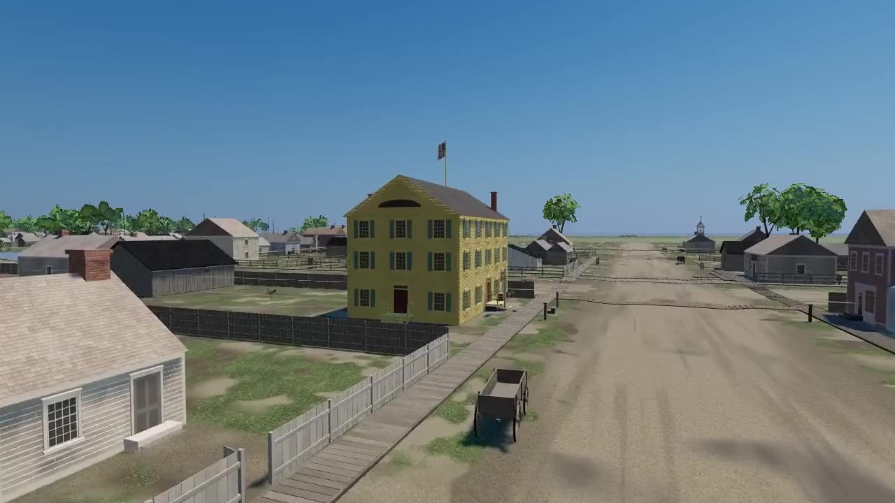

A research dataset with a renderer attached.
4D Chicago is records first: every building, person and street is a JSON record with its sources and grades. Python generators turn the records into models through a pinned Blender, a gate of checks holds every change, and three.js draws the year in the browser. Here is how it fits together, and how to work with it.
From a census page to a street you can walk.
- Records. Structures, people, households, streets, terrain and sources are JSON, checked against schemas. Every value carries a confidence and the ids of the sources behind it.
- Ground. Maps and plats are pinned to UTM coordinates; terrain, the river and the lake shore are generated per year from surveys and soundings.
- Generators. Python reads a record and builds its model in a pinned version of Blender, from the component kits below. The same record always builds the same model.
- Checks. A gate of checks runs on every change: schemas, provenance, model budgets, photo matches, reading levels, memory ceilings, and the app itself driven on a phone-sized and a desktop screen.
- Renderer. three.js in the browser: buildings batched, textures compressed and streamed in as you walk, people and horses animated from shared rigs, each frame paced to the device.
// data/structures/glessner_house.json (trimmed)
{
"id": "glessner_house",
"archetype": "masonry_house",
"built": { "value": 1887, "confidence": "attested",
"sources": ["hmdb_prairie_heritage_preserved"] },
"phases": [{
"id": "as_built_1887",
"documented_range": { "from": "1887-12-01", "confidence": "attested",
"sources": ["glessner_story_of_a_house_1923",
"habs_glessner_house_il_1015_data_pages", …] },
"position": { "utm_e": 448411.39, "utm_n": 4634155.38,
"confidence": "inferred", "sources": ["sanborn_1911_vol3_sheet_28", …] },
"form": { "frame_ft": { "value": { "length_ft": 161.25, "depth_ft": 74.0 },
"confidence": "attested", "sources": ["habs_glessner_house_il_1015_drawings"] } }
}]
}
Sixteen kits, one street of 1904.
The Prairie Avenue houses are built from a library of components, each measured from photographs, HABS drawings and period builders' catalogues. A house record names its parts and their sizes; the kits supply the stone, brick, windows and cornices. Change a kit and every house that uses it is rebuilt and checked against its photographs again.
Open the Architecture site Every kit's parts and measures, its specimen in 3D, and every building built on it.


Everything else in town.
- PeopleBodies, faces and clothing built from period sources and CC0 MakeHuman faces, with shared walking, riding, rowing and talking rigs, and 144 human assets.
- TransportHorses standing and in harness, broughams, wagons and the boats of 1812 and 1835, each from its own measured record.
- GroundGenerated terrain and streets for every year: plank walks, cobbles and dirt, trees by species, lamps, fences and yards.
- SoundBirds by season, wind that follows the trees, horses, the river and the lake, and an original score for the jaunts.
- PrintAny building exports to a watertight 3MF for a home 3-D printer. Glessner House comes out at 1:250 on a 220 mm bed.
Open the code, open the data.
The code, the records and the source catalogue live in one repository. Every building's record, every liberty and every source can be read there, and every change to them goes through the same checks.
Links that open a place
- /4d/1904/A year's front door. Each of the four years has one.
- ?anchor=glessner_houseOpen at a named viewpoint, here the sidewalk facing Glessner House.
- ?structure=tremont_house_1&version=gifford-readingSwap one building for a committed alternate build of it, to compare two readings of the evidence.
- ?debug=1The frame-time and memory read-outs the team works with.
The console handle
The app's own checks drive it through one object on the page. You can too.
// In the browser console, with a year open
const town = window.__chicago4d;
await town.timeOfDay.set('sunset'); // daybreak … night, or 'HH:MM'
await town.season.set('fall'); // spring, summer, fall, winter
town.player; // where you stand, in UTM metres
town.roll; // every building: expected, drawn, standing

Drawn live in the browserA whole town on a school laptop.
The town has to run where students and visitors are: a five-year-old office PC, a school Chromebook, a phone. Every device keeps the living town, people, horses and carriages included; a weaker machine gets a softer picture, never an emptier street.
- ProfilesThe device is recognised at load, from phones to Chromebooks to gaming PCs, and the detail, sharpness and texture sizes follow it.
- MemoryEach year has a measured memory ceiling for each class of device, held by the checks on every change.
- StreamingCompressed textures come and go as you walk; buildings, people and their shaders are prepared while the year loads, so walking does not stutter.
- OfflineA year can be saved to a device ahead of a class and opened with no network.
Full detail, streamed.
Being built: the town rendered on cloud GPUs and streamed to any screen, so the oldest classroom computer sees the same detail as the newest. The records, sources and checks stay exactly as they are; only where the frame is drawn changes.
See it running. Pick a year.
Open a year, press C for the confidence view, and click any building to read its record.
Opens the Temporal Observatory · pick a destination · W A S D to walk, or the thumb stick on a phone